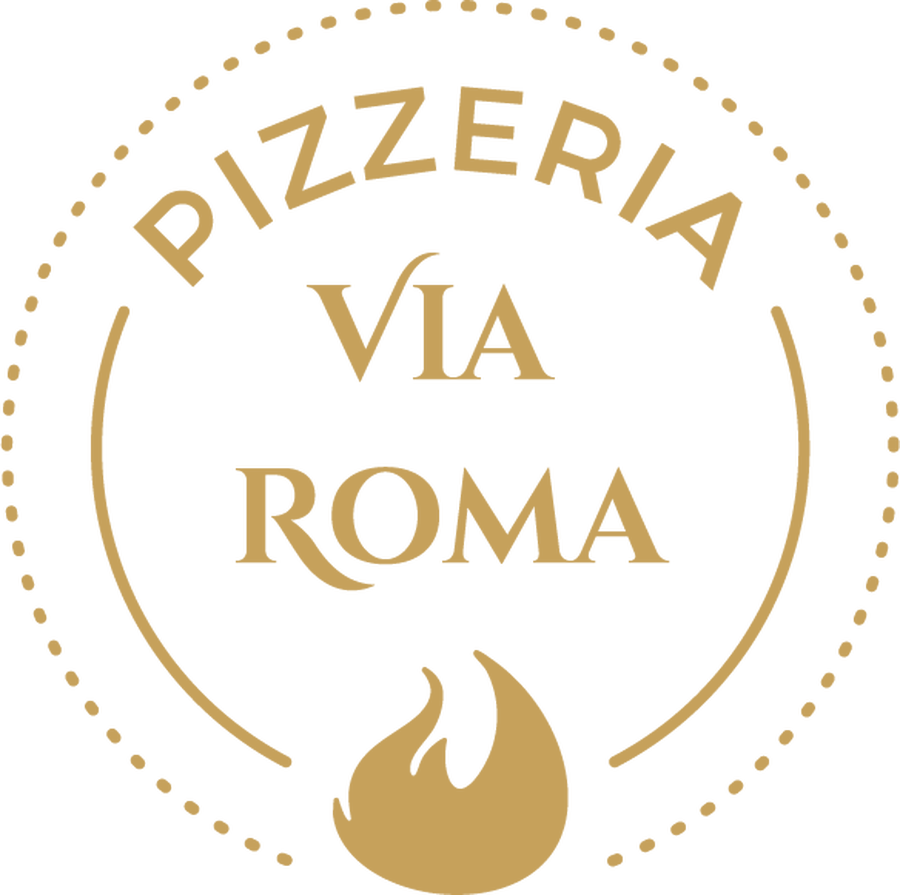
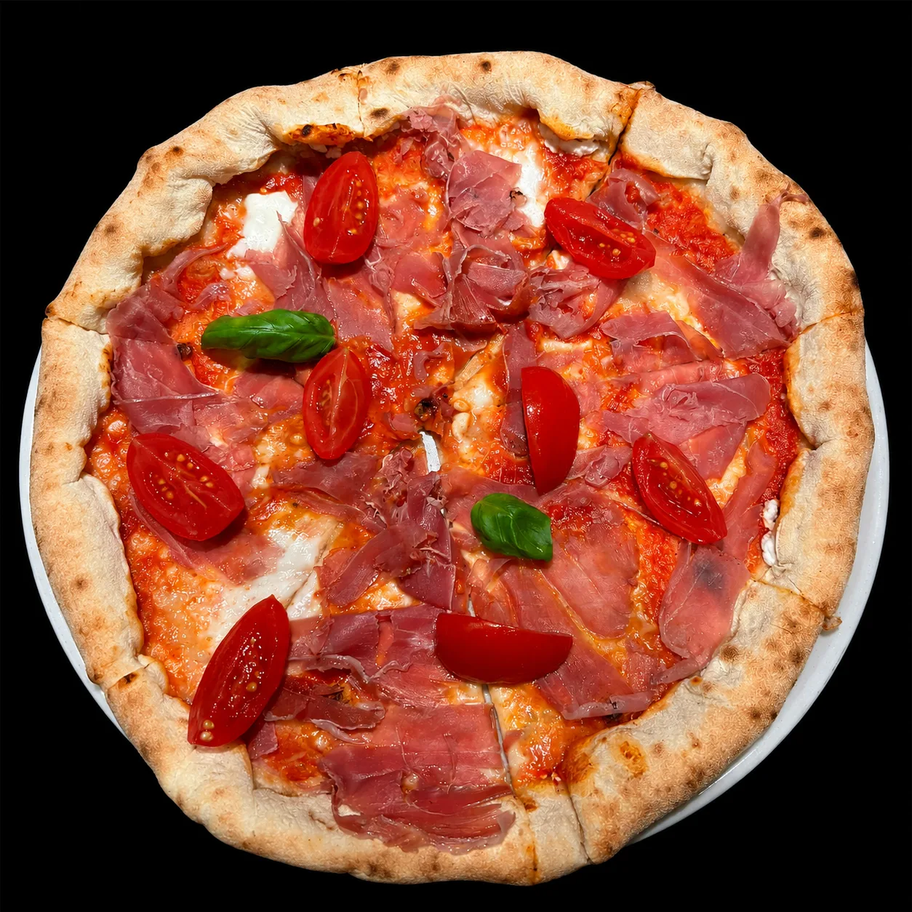

Maniago · Friuli

Maniago · Friuli
A due passi da Piazza Italia, nella città delle coltellerie, la Pizzeria Via Roma è il punto fermo delle sere di Maniago. La pietra, l'insegna, la porta aperta dalle 18:00, tutti i giorni.
Una sala disegnata per stare bene: toni scuri, dettagli in ottone, il soffitto color senape che scalda ogni tavolo. Il posto giusto per una cena lenta o una pizza veloce al bancone.
Frumenti italiani selezionati e coltivati in modo sostenibile, una filiera etica trasparente in ogni fase, dalla selezione del seme alla macinazione. Impasto a lunga lievitazione: leggero, digeribile, fragrante.
Dal nostro forno

Chiusi, dorati, ripieni d'amore. La nostra pasta piegata attorno al suo cuore, dal classico al piccante.
Scopri la selezioneTaglieri col San Daniele, caprese di bufala, insalate e piatti veloci. Per quando non è serata da pizza.
Scopri la selezioneFritti caldi e assaggi da condividere: montanare, mini frico, alette. Il miglior antidoto alla fame.
Scopri la selezioneTiramisù, panna cotta e la torta del giorno. La miglior conclusione.
Scopri la selezioneLeonardo da Vinci
© 2026 Pizzeria Via Roma · Memento Studio


Seguici
Social & Recensioni
Impasto leggero e digeribile, cornicione perfetto. La Burrata e Crudo è imperdibile.
Locale moderno e curato, personale gentile. Ottime anche le birre artigianali friulane.
La pizza di sempre, con un tocco in più, davvero. Torneremo di sicuro.